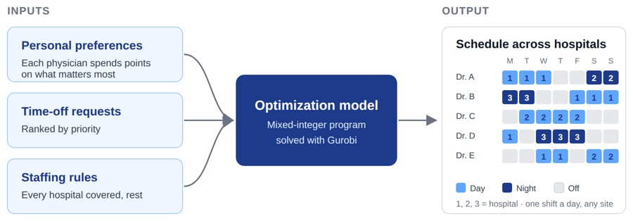
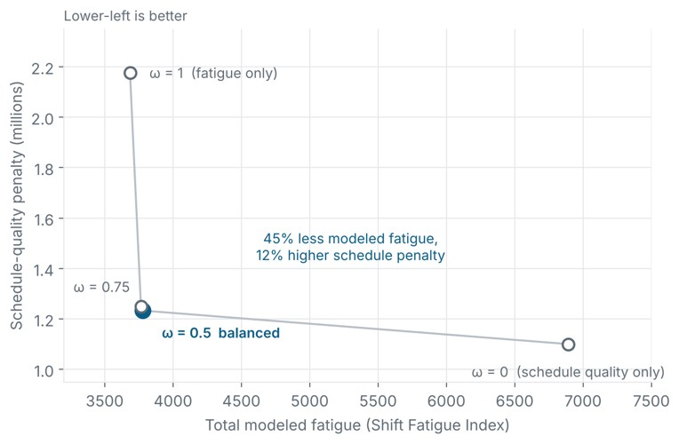
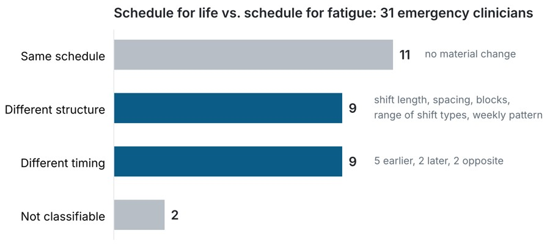
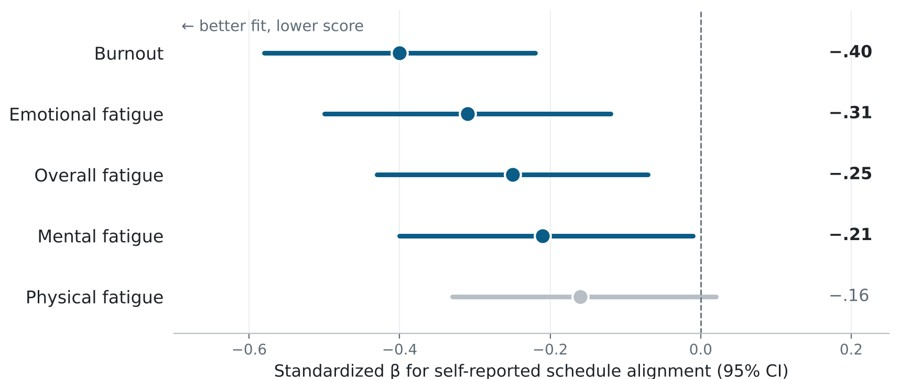
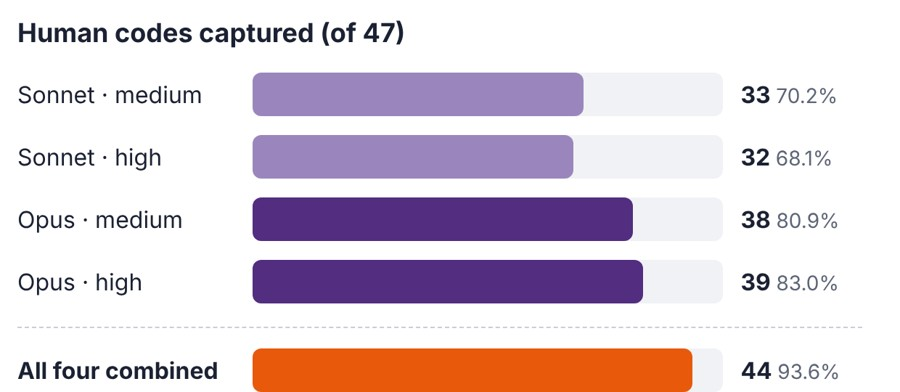
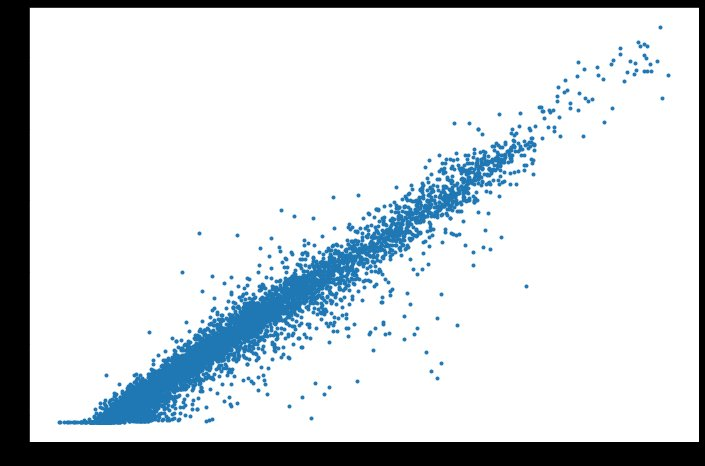
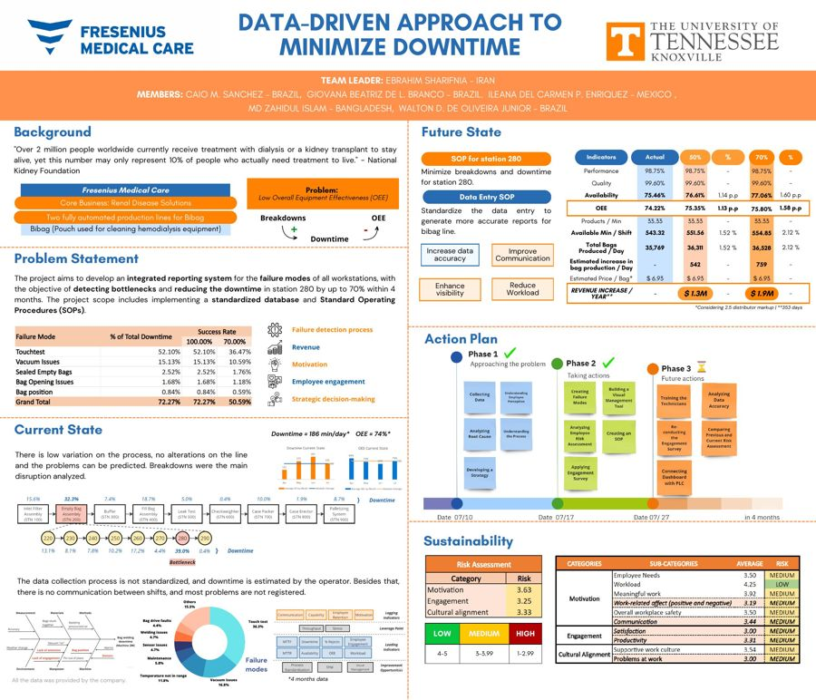

Research
My research develops data-driven, fatigue-aware, and preference-based optimization models for healthcare workforce scheduling, with a focus on emergency department physicians and nurses. I combine operations research, mathematical optimization, statistical analysis, and human-factors research to understand how shift schedules affect clinicians' fatigue, sleep, recovery, burnout, and well-being, and to build schedules that account for them.
The work is part of a CDC/NIOSH-funded, multi-institution project with Prisma Health, Clemson University, Wake Forest University School of Medicine, and the University of Central Florida. I bring together evidence from clinician interviews, surveys, historical work schedules, wearable sleep monitoring, and physiological measurements, and use it to design scheduling approaches that meet clinical staffing requirements while balancing individual preferences, fairness, and fatigue-related risk, in support of clinician well-being, patient safety, and efficient operations.

Personalized physician schedules across hospitals
Each physician spends a fixed budget of points on what matters to them, and a mixed-integer model turns those points into personal weights while covering every shift at every hospital. A new fairness design cut the night-shift imbalance between physicians by about half.

Fatigue-aware multi-site rostering
A 90-day, four-hospital rostering model that scores each shift's fatigue from chronotype fit, end time, and length. On a 40-physician test, a balanced weighting cut modeled fatigue by 45% for a 12% rise in other schedule penalties. Presented at HSPI and IISE 2026.

Schedules for life vs. schedules for fatigue
Interviews with 18 nurses and 13 physicians, each describing the schedule they prefer and the one best for their fatigue. For 18 of 31 clinicians the two differed, often because family obligations pulled their preferred hours earlier.

Does schedule fit matter for burnout?
A survey of 160 nurses and attending physicians at seven emergency departments. Nurses most often preferred 12-hour shifts and physicians 9-hour shifts, and clinicians who rated their schedule a better match to their preferences reported lower burnout (β = −0.40).

Can LLMs reproduce human thematic analysis?
Using 18 nurse interviews and a 47-code human codebook, we compare four Claude configurations. Opus captured more human codes than Sonnet (up to 39 of 47), and together they covered 93.6%, but none reproduced the human theme on schedule satisfaction.
Selected projects
Research and graduate projects in optimization, simulation, and machine learning. Open a project for methods, results, figures, and documents.
Agent-Based Simulation of the Bullwhip Effect
Built an agent-based supply chain simulation in AnyLogic to test two ways of damping the bullwhip effect. Combining information sharing with risk pooling reduced simulated order-to-demand variance by 46.3% at the factory and 49.3% at the wholesaler.
Learning-Based Optimization for the Traveling Salesman Problem
Co-authored a supervised-learning method that predicts parts of a high-quality tour and feeds those predictions to exact and heuristic solvers. Published benchmarks showed 28% shorter tours with 59% less runtime than a graph pointer-network baseline on 1,000-node instances.

Predicting Emergency Department Admissions
Predicted admission versus discharge for 347,360 emergency department visits by combining 50 structured triage variables with 500 text features from chief complaints. Compared five classifiers with cross-validated tuning; CatBoost reached the best ROC-AUC (0.863).

Bike-Sharing Demand Forecasting
Forecast hourly bike rentals in Seoul from weather, time, season, and holiday features, comparing a neural network, an LSTM, XGBoost, and random forest. Hyperparameter tuning raised the neural network's test R² from 0.91 to about 0.96.

Network Interdiction for Wildlife Trafficking
Built bilevel optimization models that choose which routes to block, under a budget, to disrupt trafficking of poached tiger parts. Reformulated them to single-level models and compared blocked routes across budgets on a case study based on Bandhavgarh Tiger Reserve.

Reducing Production Downtime at Fresenius Medical Care
Analyzed four months of production data from automated dialysis-product lines, breaking equipment effectiveness into availability, performance, and quality losses by failure mode. Proposed a failure-reporting system, a supporting database, and standard operating procedures.
Skills
Methods and tools used across my research and projects.
Optimization
Machine learning and statistics
Simulation
Human-centered research
Software and tools
Publications
Eight peer-reviewed publications. Full list with talks and posters →
News
| Nov 2026 | Talk accepted at the INFORMS Annual Meeting on physician scheduling with individual preferences. |
| Oct 2026 | Survey study poster accepted at the Prisma Health Research Showcase. |
| May 2026 | Presented multi-site physician scheduling at the IISE Annual Conference. |
| 2026 | Clemson INFORMS student chapter received the INFORMS Magna Cum Laude award during my term as president. |
Education
Ph.D., Industrial Engineering
M.S., Industrial Engineering
B.Sc., Industrial & Production Engineering
Experience
Research, teaching, industry, and leadership roles. Select a role for full details.
Graduate Research Assistant
Graduate Research Assistant
Lecturer and Assistant Professor
Lecturer
Graduate Teaching Assistant
Intern
President (Vice President 2024–25)
Undergraduate Research Mentor
Honors and service
Honors and awards
- 2026CECAS GSAB Travel GrantCollege of Engineering, Computing and Applied Sciences, Clemson University
- 2026Graduate Student Government Travel GrantClemson University
- 2025, 2026INFORMS Student Chapter Award, Magna Cum LaudeReceived by the Clemson chapter during my terms as vice president and president
- 2021Dr. Lloyd W. Crawford FellowshipUniversity of Tennessee Space Institute
- 2019University Gold MedalRUET · highest CGPA in Industrial & Production Engineering
- 2018Prime Minister Gold MedalUniversity Grants Commission of Bangladesh · highest CGPA among faculty graduates
Professional service
- OngoingPeer reviewerJournal of Big Data · Scientific Reports · BMC Medical Imaging
- 2022–Professional membershipsINFORMS · Institute of Industrial and Systems Engineers (IISE)
- 2019–21Faculty moderator, RUET IPE ClubIndustrial & Production Engineering student club, Bangladesh